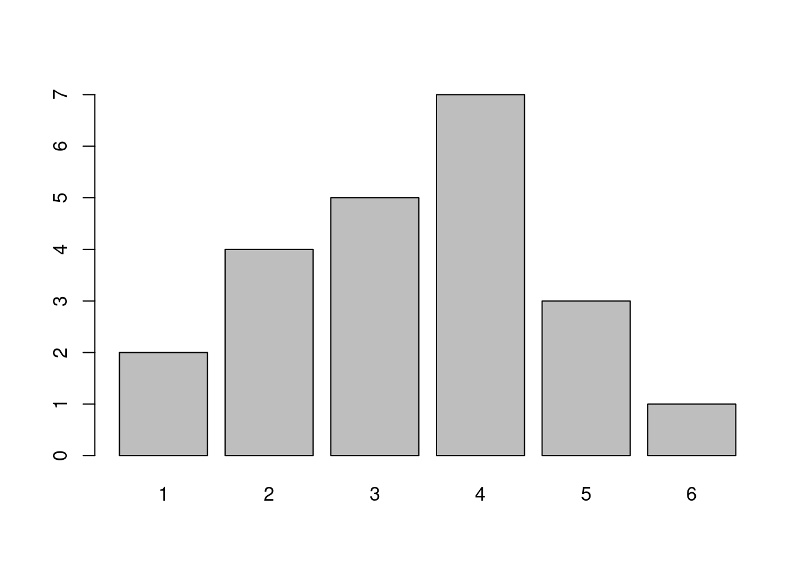
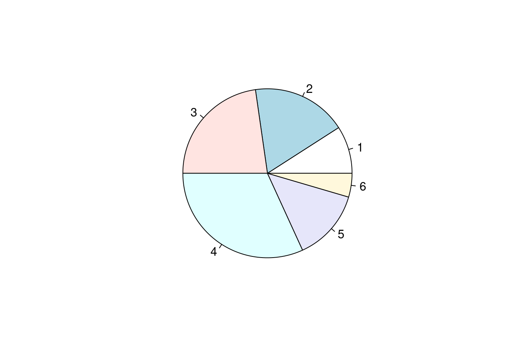
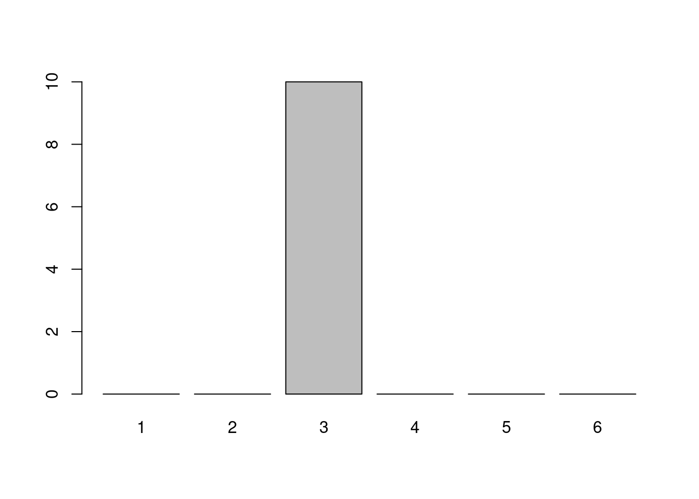
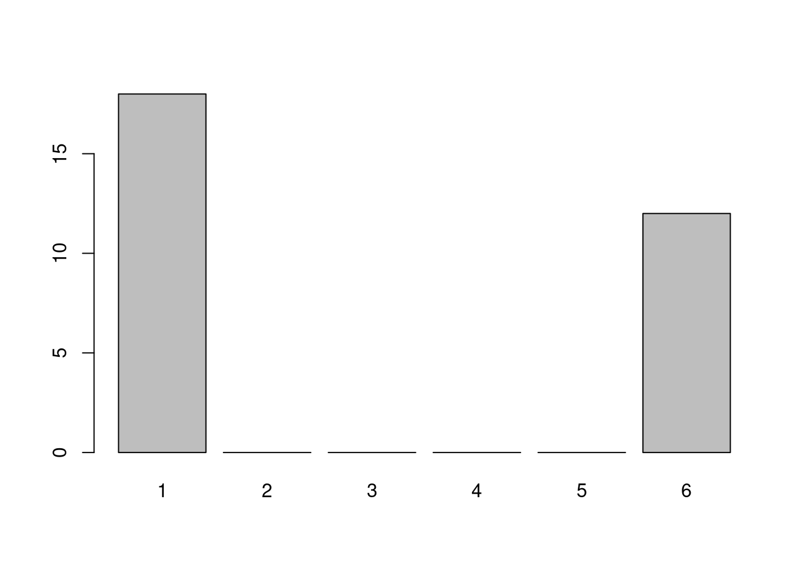
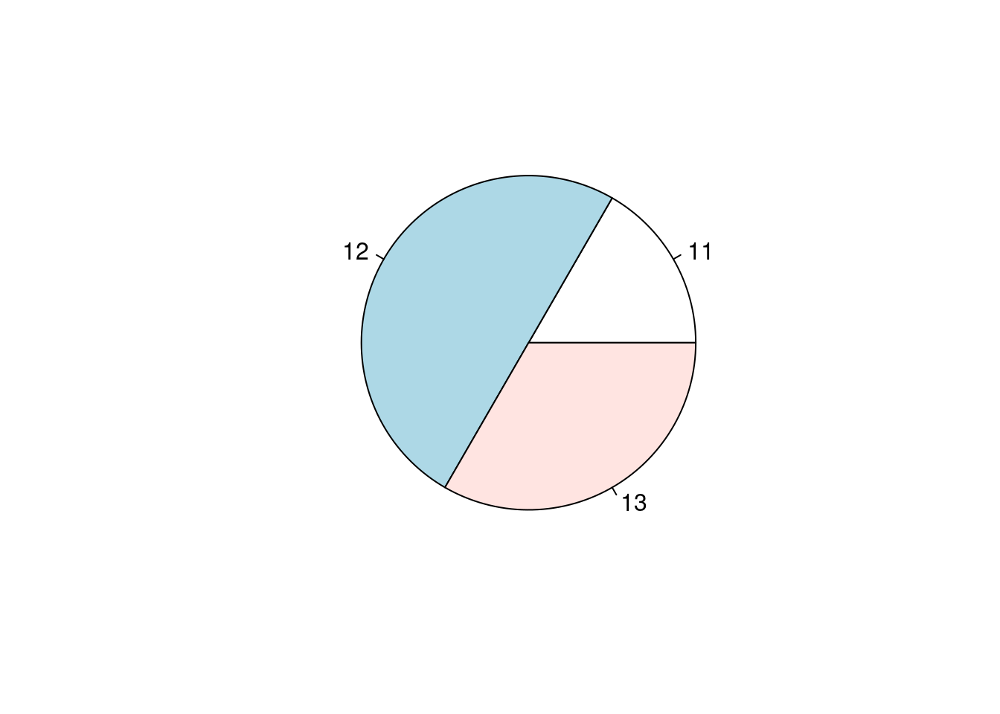
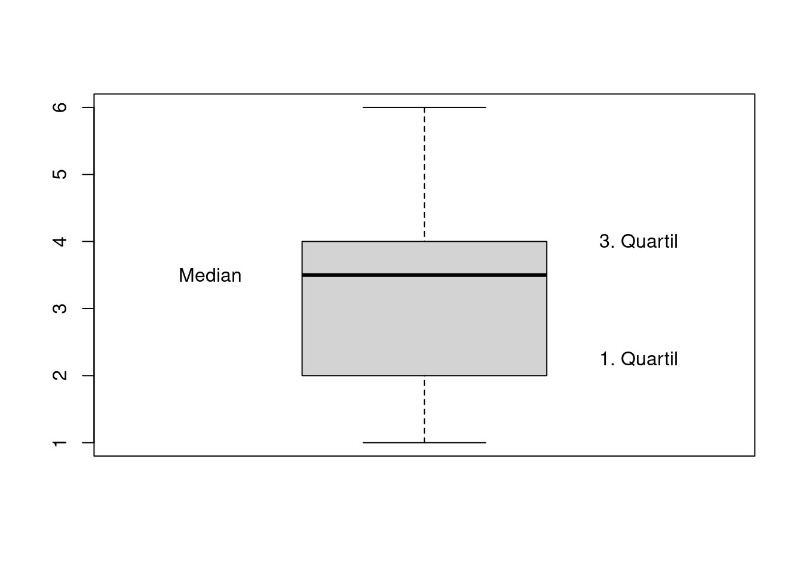

2.2 Deskriptive Statistik zum Nachlesen
Hätten wir die letzten Monate Präsenzunterricht machen dürfen, hätten wir eine Klassenarbeit über das letzte Thema geschrieben. Schön wäre das gewesen, dann hätten wir jetzt ein Häkchen machen können und gut gelaunt die ersten Frühlingstage verbracht.
Frau D. säße jetzt zuhause in ihrer Küche und würde all die Arbeiten korrigieren. Jedes Mal wenn sie mit einer Arbeit fertig wäre, würde sie die Note auf den dafür vorgesehenen Schmierzettel schreiben. So sähe dieser Schmierzettel dann vielleicht aus:
Einen solchen Schmierzettel bezeichnet man in der Statistik als Urliste. Auf ihr werden die Ergebnisse einer statistischen Erhebung in der Reihenfolge fesgehalten, in der sie eben auftreten. Daher ist eine Urliste in der Regel unsortiert.
Ordnet man nun die auf der Urliste festgehaltenen Ergebnisse der Größe nach, erhält man eine Rangliste. Wollte Frau D. diese erstellen, sähe sie für das obige Beispiel so aus:
Aber auch diese - schon etwas ordentlichere - Liste würde euch Frau D. nicht als Ergebnisspiegel präsentieren. Hier hat sich die Häufigkeitsliste durchgesetzt. Auf ihr gibt man zu jedem der möglichen Werte an, wie oft er vorkommt.
Und da sind wir schon bei zwei für dieses Kapitel zentralen Begriffen…
Absolute und relative Häufigkeiten ermitteln
Die Anzahl, mit der ein Wert in der erhobenen Urliste vorkommt, heißt absolute Häufigkeit des Wertes. Der Anteil, den die absolute Häufigkeit an der Gesamtzahl der erhobenen Daten hat, heißt relative Häufigkeit.
Zwischen der absoluten und der relativen Häufigkeit besteht also der folgende Zusammenhang:
\[relative \; Häufigkeit = \frac{absolute \; Häufigkeit}{Gesamtzahl\; der\; erhobenen\; Daten}\]
An unserem Notenbeispiel kann man sich das gut verdeutlichen:
Die absolute Häufigkeit der Note Eins etwa ist \(2\). Die absolute Häufigkeit der Note Vier dagegen ist \(7\).
Wenn ich mich nicht verzählt habe, haben \(22\) Schüler:innen an der Klasenarbeit teilgenommen. Damit erhält man für die Note Eins eine relative Häufigkeit von \(\frac{2}{22} = \frac{1}{11}\) und für die Note Vier eine relative Häufigkeit von \(\frac{7}{22}\).
Aufgabe 1
Frau D. hat eine Klassenarbeit korrigiert, an der 26 Schüler:innen teilgenommen haben. Sie hatte auch bereits eine Häufigkeitstabelle erstellt, um eine Übersicht über die Ergebnisse zu erhalten. Leider hat eins ihrer Kinder ein Glas Wasser darüber gekippt. Nun kann man die Hälfte nicht mehr lesen…
| Note | 1 | 2 | 3 | 4 | 5 | 6 |
|---|---|---|---|---|---|---|
| absolute Häufigkeit | 2 | ??? | 10 | ??? | ??? | 1 |
| relative Häufigkeit | ??? | 0,27 | ??? | 0,15 | 0,08 | ??? |
Vervollständige die Tabelle. Gib relative Häufigkeiten auf zwei Nachkommastellen genau an und absolute Häufigkeiten als ganze Zahlen.
Aufgabe 2
Beim Torwandschießen wurde die Anzahl der Treffer notiert. Wer hat die beste Torquote?
| Anzahl der Schüsse | Anzahl der Treffer | |
|---|---|---|
| R. Lewandowski | \(\quad\quad\quad 32\) | \(\quad\quad\quad 17\) |
| D. Alaba | \(\quad\quad\quad 53\) | \(\quad\quad\quad 30\) |
| L. Sane | \(\quad\quad\quad 16\) | \(\quad\quad\quad 9\) |
| Th. Müller | \(\quad\quad\quad 27\) | \(\quad\quad\quad 16\) |
| J. Kimmich | \(\quad\quad\quad 52\) | \(\quad\quad\quad 29\) |
Als Torquote bezeichnet man das Verhältnis von getroffenen Toren zur Gesamtanzahl der Schüsse. Wenn du also etwa bei fünf Schüssen dreimal das Tor triffst, dann hast du eine Torquote von \(\frac{3}{5}=0,6\).
Aufgabe 3
Eine Klasse mit 28 Schüler:innen, von denen 16 Mädchen sind, wird nach ihren Vorlieben und Abneigungen befragt. Dabei geben 14 Schüler:innen an, dass Mathe ihr Lieblingsfach sei. Ein erster Blick auf die erhobenen Daten verrät zudem, dass unter den Matheliebhabern 6 Jungen sind.
Entscheide begründet: Ist Mathe nun bei den Mädchen oder bei den Jungen beliebter?
Häufigkeiten in Tabellen, Säulen- und Kreisdiagrammen darstellen
Mit Tabellen und Diagrammen kann man erfasste Werte veranschaulichen. Neben Tabellen hast du sicherlich mindestens Säulen- und Kreisdiagramme kennengelernt.
In Säulendiagrammen kann man die absoluten Häufigkeiten der Werte ablesen. Kreisdiagramme verdeutlichen dagegen den Anteil den ein Wert an der Gesamtheit hat.
Du erinnerst dich, dass Frau D. die Noten, die sie mit ihrer ausgefallenen Klassenarbeit erhoben hat auf einer Urliste notiert hat.
Um die Mathelage besser einschätzen zu können, greift Frau D. nun in die Trickkiste der deskriptiven (das heißt beschreibenden) Statistik:
Zunächst bringt sie Ordnung ins Chaos, indem sie die Daten tabellarisch darstellt.
| 1 | 2 | 3 | 4 | 5 | 6 | |
|---|---|---|---|---|---|---|
| Anzahl | 2 | 4 | 5 | 7 | 3 | 1 |
Um einen besseren Eindruck von der Verteilung der Daten zu bekommen, fertigt sie nun ein Säulendiagramm an.

Schließlich lässt sie sich von ihrem Rechner noch ein Kreisdiagramm erstellen, um eine bildlichere Vorstellung von der relativen Häufigkeit der Noten zu bekommen.
Beim Kreisdiagramm werden Anteile durch passende Winkel am Mittelpunkt des Kreises dargestellt. Der Vollkreis hat 360°. Einer relativen Häufigkeit von \(1\%\) entspricht also ein Kreissektor mit einem Mittelpunktswinkel von \(360° \cdot {1 \over 100} = 3,6°\). Einer relativen Häufigkeit von \(30\%\) entspricht damit ein Kreissektor mit einem Mittelpunktswinkel von \(30 \cdot 3,6° = 108°\)

Aufgabe 1
In einer Mathearbeit gab es folgende Noten:
Erstelle ein Säulen- und ein Kreisdiagramm für die Verteilung der Noten. Du kannst diese Aufgabe per Hand oder mit dem Computer lösen.
Für das Kreisdiagramm musst du die relativen Häufigkeiten berechnen.
Aufgabe 2
Bei einer Umfrage unter echten Kerlen ergab sich, dass sich \(80\%\) für Fußball interessieren, \(10\%\) gerne Motorrad fahren, \(10\%\) schnelle Autos lieben, sich \(5\%\) für Fußball und schnelle Autos interessieren und \(3\%\) Fussball und ihr Motorrad lieben.
Die Aufgabe lautet: Stelle diesen Sachvervhalt in einem Kreisdiagramm dar.
Anton zeichnet sofort los. Doch schon nach den ersten drei Angaben ist der Kreis “voll”. Er jammert. Seine kleine Schwester sieht sich seinen Kreis an. Ziemlich schnell hat sie entdeckt, wie man das Problem lösen kann. Dazu muss sie nicht einmal einen neuen Kreis zeichnen.
Was tut sie?
Das arithmetische Mittel, die Spannweite und den Median angeben
Um kurze und prägnante (oft auch zu kurze!) Aussagen mit Hilfe der erhobenen Daten treffen zu können, bedient man sich der statistischen Kennwerte. Auch von diesen kennst du schon einige.
Das arithmetische Mittel beispielsweise ist Bestandteil des Alltags: Wenn wir vom “Durchschnitt” sprechen, meinen wir meist arithmetische Mittelwerte. Du erwartest ihn vermutlich auch als Angabe unter einer Klassenarbeit.
Das arithmetische Mittel berechnet man als die Summe aller Werte durch die Anzahl der Werte. Sehen wir uns als Beispiel die Fehleranzahl von 5 Grundschüler:innen in einem Diktat an.
| Anzahl der Fehler | |
|---|---|
| Anna | \(\quad\quad\quad 0\) |
| Barbara | \(\quad\quad\quad 2\) |
| Claire | \(\quad\quad\quad 4\) |
| Dennis | \(\quad\quad\quad 3\) |
| Enno | \(\quad\quad\quad 5\) |
Das arithmetische Mittel ergibt sich also hier wie folgt: \[\bar{x} = \frac{0+2+4+3+5}{5} = \frac{14}{5} =2,8\]
Das arithmetische Mittel hat allerdings einen kleinen Schwachpunkt. Es lässt sich - wie man sagt - von Ausreißern beeinflussen. Was das heißt, erkennt man ganz gut in dem Fall, in dem der arme Enno nicht ein einziges Wort richtig geschrieben hat…
| Anzahl der Fehler | |
|---|---|
| Anna | \(\quad\quad\quad 0\) |
| Barbara | \(\quad\quad\quad 2\) |
| Claire | \(\quad\quad\quad 4\) |
| Dennis | \(\quad\quad\quad 3\) |
| Enno | \(\quad\quad\quad 131\) |
Wenn der Grundschullehrer nun in einer Konferenz besorgt mitteilen würde, dass die Kinder im Diktat im Durchschnitt 28 Fehler machen, wäre dies sicher keine angemessene Aussage über die tatsächliche Leistung der Schüler:innen. Während Anna, Barbara, Claire und Dennis viel zu schlecht dastünden, käme Enno wiederum viel zu gut weg.
Diesen Nachteil hat der Median nicht (er hat andere). Der Median ist der Wert in der Mitte einer Rangliste. Hat die Rangliste eine ungerade Anzahl von Werten, so ist der mittlere Wert der Median. Hat die Rangliste eine gerade Anzahl von Werten, so bildet man den Mittelwert der beiden Werte in der Mitte.
Was heißt das?
Zunächst muss man also die Urliste der Größe nach sortieren. Für die fünf Grundschüler:innen erhält man dann je nach Szenarion \[0;\; 2;\; \color{red}{3};\; 4;\; 5\] oder \[0;\; 2;\; \color{red}{3};\; 4;\; 131\] Als Median erhält man also in beiden Fällen den Wert 3.
Und ja: Mehr muss man nicht tun. Man sortiert alle Werte der Größe nach und ermittelt den mittleren Wert.
Hätte nun auch noch Fritz am Diktat teilgenommen und ebenfalls 0 Fehler geschrieben, so sähe die Liste also wie folgt aus: \[0;\;0;\; \color{red}{2};\; \color{red}{3};\; 4;\; 131\] Der Median ist in diesem Fall definiert, als der Mittelwert aus den beiden mittleren Werten. In obigem Beispiel also \(\frac{2+3}{2}=2,5\)
Das arithmetische Mittel und der Median geben also Auskunft über den Durchschnitt. Der Durchschnitt alleine ist allerdings gar nicht unbedingt aussagekräftig.
Frau D. hat in zwei Parallelklassen eine Mathearbeit schreiben lassen. Wie es der Teufel will, kann sie in beiden Fällen stolz auf einen Durchschnitt von \(3,0\) blicken…
Dass dies aber keineswegs bedeutet, dass die Klassenarbeiten gleich ausgefallen sein müssen, zeigt ein kurzer Blick auf die Notenverteilungen…
Bei der Klasse 8x scheint es sich um eine sehr homogene Lerngruppe zu handeln:

Die Klasse 8y dagegen besticht durch ihre große Spannweite

Unter der Spannweite versteht man die Differenz aus dem größten und kleinsten Wert. Im Fall der Klasse 8x ist die Spannweite \(3-3=0\). Für die Klasse 8y ist sie \(6-1=5\). Wie auch bei der Berechnung des Mittelwerts kann ein Ausreißer für eine große Spannweite sorgen.
Um erhobene Daten kurz und prägnant zu beschreiben, ist es sinnvoll, neben der Angabe eines durchschnittlichen Wertes (Median oder Mittelwert), auch anzugeben, welche Spannweite die Daten haben.
Aufgabe 1
In einer Mathearbeit gab es folgende Noten:
Gib das arithmetische Mittel, die Spannweite und den Median an.
Aufgabe 2
Die Klasse 8x besteht aus 24 Schüler:innen. Das Kreisdiagramm enthält Informationen über das Alter der Schüler:innen.

Gib das durchschnittliche Alter an.
Ermittle, wie sich der Altersdurchschnitt ändert, wenn zwei 11-jährige Schüler die 8x verlassen und eine 14-jährige Schülerin neu in die Klasse kommt.
Box-Plots interpretieren und erstellen
Neben der Möglichkeit erhobene Daten in Form einer Tabelle, eines Säulen- oder eines Kreisdiagramms darzustellen, solltest in der 7. Klasse auch die Darstellung in Form eines Boxplots kennengelernt haben.
Ein Boxplot enthält sowohl Information über einen durchschnittlichen Wert, als auch darüber, welche Spannweite die Daten vorweisen. Daher ist er von allen Darstellungsformen, die dir bisher begegnet sind, die aussagekräftigste.
Anhand der ausgefallenen Mathearbeit soll er hier kurz wiederholt werden.

Die Box wird dabei begrenzt durch das 1. und 3. Quartil. Das 1. Quartil ist der mittlere Wert der unteren Datenhälfte, das 3. Quartil ist der mittlere Wert der oberen Datenhälfte. Unterteilt wird die Box durch den Median.
Im Beispiel der Mathearbeit sind das folgende Werte:
\[1\;,1\;,2\;,2\;,2\;,\color{red}{2}\;,3\;,3\;,3\;,3\;,3\;,\color{red}{\frac{3+4}{2}},4\;,4\;,4\;,4\;,4\;,\color{red}{4}\;,4\;,5\;,5\;,5\;,6\]
Damit liegen \(50%\) der Werte in der Box! Sie gibt also eine guten Eindruck davon, welche Werte oft vertreten waren. Gleichzeitig kann man an der Größe der Box auf einen Blick abschätzen wie groß die Spannweite sein könnte.
Die Querstriche am oberen und unteren Ende bezeichnet man als Zäune. In unseren Beispielen genügt es, für den unteren Zaun den kleinesten und für den oberen Zaun den größten Wert zu wählen.
Aufgabe 1
Wie sieht ein Boxplot aus, wenn
alle 30 Zahlen den Wert 3 besitzen (siehe Klasenarbeit der Klasse 8x)?
12 Zahlen den Wert 6 und 18 Zahlen den Wert 1 haben (siehe Klassenarbeit der Klasse 8y)?
Wie könnte die Datenliste aussehen, wenn die Box des Boxplots die Länge 0 hat und der Abstand der beiden Zäune 10 sein soll?
Aufgabe 2
Die folgende Liste zeigt, wie lange Hugo beim Würfeln jeweils auf die erste 6 warten musste. \[1\;, 5\;, 11\;, 4\;, 15\;, 3\;, 7\;, 6\;, 1\;, 3\;, 1\;, 4\]
Stelle die Ergebnisse mit Hilfe eines Boxplottes dar.